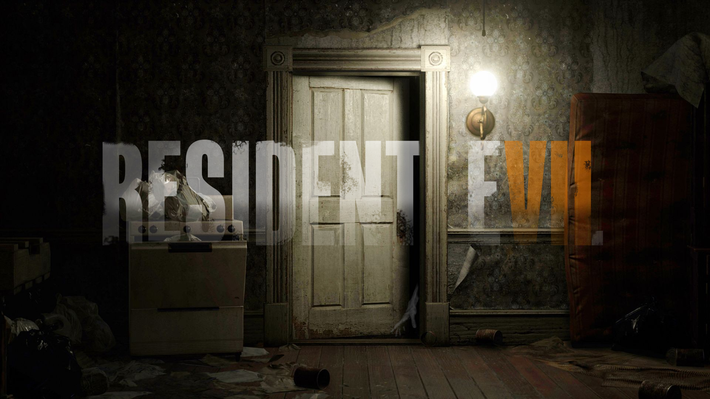

Template
Resident Evil 7
Rating: 7.7
Resident Evil 7 takes some big risks with the long-running horror series. But even as some succeed and others fall flat, this new first-person take on the formula wisely remembers that it’s survival-horror adventure — composed of tense exploration and careful item-hunting — and not solely its action that made its early predecessors memorable.
With one of the creepiest single settings since the Spencer Mansion and an enticingly bizarre mystery to unravel, this is the most fun I’ve had with a Resident Evil game in years. The atmosphere in Resident Evil 7 is the strongest the series has seen in a long time, and that’s owed entirely to the eerie Dulvey plantation, to which the player character Ethan has been summoned by a cryptic email from his missing wife. If classic Resident Evil games were rooted in the zombie films of George A. Romero, this is Resident Evil in the tradition of The Texas Chainsaw Massacre, with all the gruesome imagery, dilapidated old shacks, and cannibalistic horrors that come with it.
Sometimes that makes for an interesting backdrop, especially as you begin to trace the residents of the Dulvey Mansion’s descent into savagery and uncover the way it’s manifested in their domestic life. Traces of humanity aren’t hard to find behind all the locked doors: old photographs, trophies for academic achievement, a discarded football helmet. Compared to the cold, medieval interior of the still-beloved Spencer Mansion, the Baker household actually feels like a lived-in space rather than a grandiose maze of traps and hidden laboratories, which is an interesting and more intimate change of scenery that focuses on something that the series has never fully explored before.
Other times, Resident Evil 7’s roots in “hillbilly horror” relies too heavily on overplayed tropes about rural America and begins to border on the cartoonish. The Bakers are disgusting, dysfunctional, and at times pretty laughable, but most of this is at least explained later on, which — without spoilers — satisfactorily avoids putting the blame entirely on their rural upbringing. But even with its faults, Resident Evil 7’s change in style and setting never fails to deliver a strong sense of place that makes frequent exploration and backtracking through the dingy Dulvey property and its secret underground lairs work without wearing out its welcome.
The setting’s only real failing is its puzzles, which were disappointingly rare and far too simple. Rather than hiding codes and passwords behind riddles or forcing some kind of threat or fail state on me if I entered in an incorrect solution as previous games have (think of the Armor Room puzzle from the first Resident Evil), Resident Evil 7 doesn’t even seem to try to make its obstructions interesting or challenging. I felt like I simply stumbled upon answers more than I did employed any kind of real problem-solving to get there.
On more than one occasion, the solution to a problem was handed to me before I really felt like I was given the chance to start investigating it. In one area that required me to open up a wall panel that housed a secret room, a child’s drawing just a foot or two away from the wall panel in question circled exactly where I needed to look to find it. A more subtle approach that let me investigate the room of my own accord would have greatly improved scenarios like this one, especially because the first-person perspective lets you take a more detailed look at your surroundings than the traditional third-person view of other Resident Evil games does.
Fighting Evil
The Baker family, like unstoppable tyrants with unpleasant personalities, are among the first enemies you’ll encounter, and they’re by far the most interesting. The first fight with Jack Baker had me both laughing hysterically and scrambling frantically for a way to defend myself, a winning combination that made the unpredictable encounter one of Resident Evil 7’s highlights. Jack’s patrolling of the mansion — at one point even bursting through a wall, Mr. X-style — actually felt like a real threat, even after I was armed with more than a knife. To survive, I needed to either flee or fend him off by unloading my handgun on him, which is a decision that can come back to haunt you.
Resident Evil 7 has no hiding or heavily stealth-focused gameplay, contrary to what its first-person horror style might lead some to believe. It’s still a Resident Evil game, and you still need to shoot enemies to kill them or else they’ll continue to roam around where you left them, waiting to kill you the next time you backtrack on by. Only this time, you can’t rely on the safety of load screen doors to keep baddies out, which only ups the tension when low health or low ammo means you do need to just make an escape. Better get really good at closing doors behind you, because not even safe rooms are safe anymore.
But while the Bakers are the best enemies, there’s an extremely wide gap in quality between them and the only other prominent enemy type in Resident Evil 7. Throughout my roughly 10-hour journey, just about the only other enemy type I encountered were hulking, oil-black creatures called The Molded. They come in a few varieties: the standard Molded; the ones with a giant, warped arm reminiscent of classic tyrant designs; ones that crawl around; and heavyset ones that vomit acid. (There are also bugs in one area, but they serve more as obstacles to overcome than hostiles with distinct behaviors.) While visually repulsive and threatening enough to cause more than a couple of tense combat encounters, The Molded lost their ability to shock me very quickly — especially because the scenarios in which you encounter them are all so similar.
When I think of my favorite Resident Evil moments from past games, two come to mind: the first time Hunters appear in the original and 2002 remake of Resident Evil, and the first time you encounter a Crimson Head in the wild. What made these moments good was their unpredictability – you had no idea what you were about to face after that first-person sequence marking the Hunters’ arrival, and seeing a dead zombie you’ve passed by a dozen times already suddenly leap to life — and then a second time, even stronger — was something horrifyingly new.
Resident Evil 7 could have used more moments like this, but it does far too much signaling ahead of everything it does. The Molded tear themselves out of the wall with a distinctly slimy sound, and they only do so in areas overtaken by mounds of black mold. So even when there are opportunities for them to at least deliver a jump scare, you’ll be anticipating it at the first sight of a molded wall. (Though there is one moment where one of the crawlers burst through a wall in an area that I had already passed by a few times, so… props to that guy.)
Most of Resident Evil 7’s tension comes from finding yourself in tough situations and struggling to adapt, since it’s all about scavenging for items and conserving what little ammunition and resources you do have. (In other words, classic Resident Evil style.) With limited inventory space and a familiar reliance on item boxes to manage your belongings, I found that constantly storing small amounts of handgun and shotgun ammo as I found it, granting myself a safety net of health-restoring green herbs, and keeping psychostimulants handy for tracking down well-hidden items was a welcome layer of micromanagement on top of every larger objective. I’m happy to see that core Resident Evil idea make a comeback in 7. But being forced to change up my survival tactics in the face of new, unpredictable enemies and situations throughout the campaign would have made the experience a lot scarier.
Master of Unlocking
Despite the shift to first-person, Resident Evil 7 feels more like an adventure game than a first-person shooter, which is a welcome return to what the series was in the ‘90s. Thanks to a compelling pace that ensured I always knew what I needed to do next, most of my time wandering hallways, collecting keys, and unlocking secret passageways and shortcuts around the Dulvey property felt well spent, especially as the central mystery unraveled around me with each file and phone call I received.
Your objectives are made extremely clear thanks to story direction, loading screen recaps when you load a save or die, and the generally simple nature of your objectives to begin with. Sometimes it’s almost too obvious, which removes some of the confusion, tension, and horror that comes with trying to navigate a huge secrets-filled house. But the flipside is you’ll probably never hit a frustrating dead-end for too long, which also helps maintain the comfortably steady pace. If there ever is a reason to lose your place (maybe you’ve just loaded a save file after not playing for a few weeks), you can conveniently bring up your current objective at the touch of a button.
Because your every action ties so directly to the logic of the story, you’re also always aware of what some new clue or crest you found will do, which helps Resident Evil 7 avoid the old adventure-game stigma of over-abstraction. That story does eventually tie into the existing lore, too, despite the all-new cast of characters. As a long-time fan, it was rewarding to uncover notes and files that could relate back to previous games, and trying to infer what that connection could be even though most of it is still clearly heading in a new direction. The tangential relationship to previous games gives Resident Evil 7 the feeling of a reboot, while still allowing it to function comfortably as a sequel. It all culminates in a mostly satisfying conclusion that leaves just enough unanswered questions for a follow-up.
There are also plenty of exciting references to classic Resident Evil throughout. Things like crest doors, a weight-based puzzle to obtain the shotgun, themed keys, safe rooms, items boxes, and more. While it was nice to see many of these homages at first, they occasionally felt out-of-place or oversimplified — shallow nods to a bygone era rather than a confident continuation of the very elements this series invented.
Up Close and Personal
My Resident Evil 7 experience was positive with and without the PlayStation VR. (I played about half in VR, and half without.) There were only a handful of sequences that I felt were designed specifically to take advantage of VR’s unique capabilities (any sequence when a character brought an unwanted object too close to my face), but I never felt like I was missing out on anything substantial when playing in 2D.
The final boss is the only sequence that really suffers because of its commitment to delivering a VR experience, but whether or not that is only VR’s fault is hard to say. Unimpressive bosses happen in non-VR games, too.
VR definitely makes the Resident Evil 7 experience very different, and I did enjoy my time roaming the eerie Dulvey property up close and personal, but it is not necessarily the superior option. The one area where VR does significantly improve the gameplay experience is combat: because you move your crosshair by looking around, VR makes landing headshots on enemies much easier than it is on a gamepad.
The Verdict
Resident Evil 7 grounds itself in elements that made the original great while still indulging in a risky new shift in style that both helps and hurts the beloved formula in equal measure. But it’s also the closest a numbered sequel has come to recapturing Resident Evil’s slow, but thrilling and atmospheric adventure game roots in a while — a welcome return that I truly hope to see more of in the future.